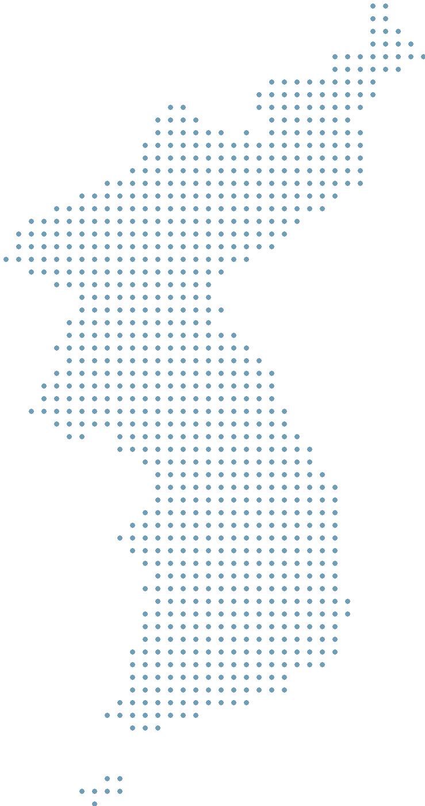

PERSONAL CULTURE ARCHIVE · 2024—

컬스토리맵
CULTURE × (HI)STORY
관찰해서 시작해
콘텐츠로 완성되는 기록들
0 RECORDS · 0 MONTHS · 2024—
동덕여자대학교 이서진
문예창작학 · 국사학 · 문화예술경영학
2gongi@naver.com
ARCHIVE →
관리자 로그인
PERSONAL CULTURE ARCHIVE
경험에서 콘텐츠까지, 생각의 이동 경로
방문자 모드
모든 유형
초기화
관리자 로그인
닫기
이메일
비밀번호
로그인
Supabase에서 만든 관리자 계정의 비밀번호를 입력하세요.
새 기록
닫기
방문일
기록일
기록 유형
관람/답사 대상
장소
관람 형태
혼자
함께
단체
기타
제목
관련 링크
해시태그 — 쉼표로 구분
ARCHIVE 사진 — 업로드 전에 자동 리사이즈됩니다
NOTE · 무엇을 발견했나
🌱 SEED · 무엇이 떠올랐나
＋ SEED 추가
WORK · 무엇을 만들었나
＋ WORK 추가
공개 설정
전체 공개
비공개
저장
삭제
화면 문구 수정
닫기
이름
영문 부제
메인 설명
왼쪽 문구
인적사항
ARCHIVE 이름
NOTE 이름
SEED 이름
WORK 이름
저장